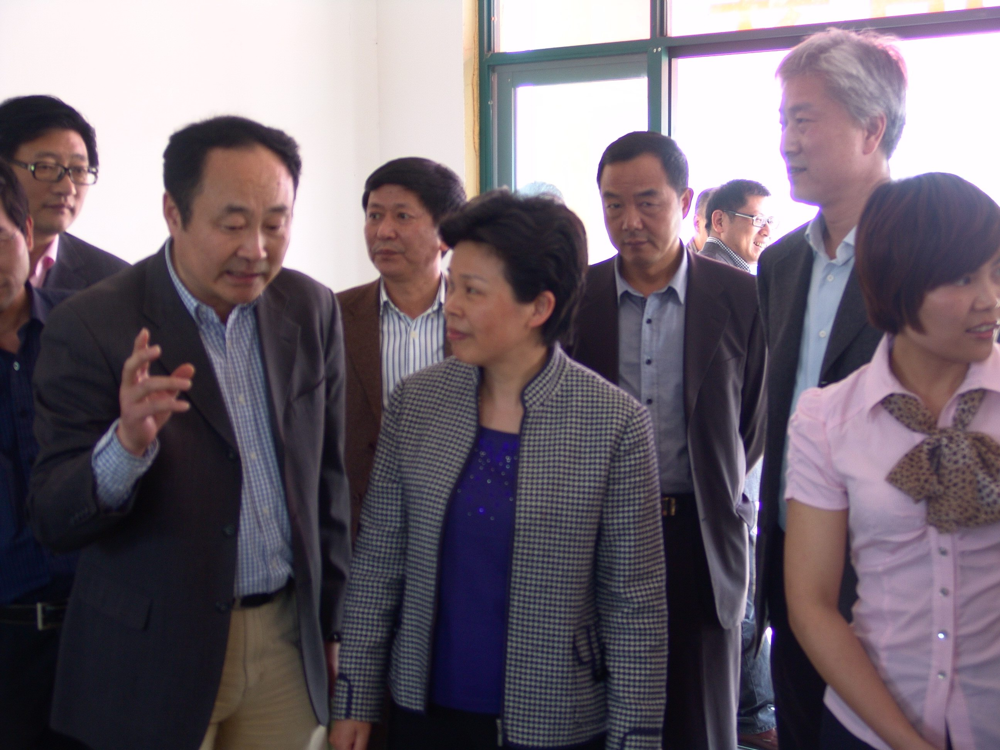

葛慧君副省长视察我公司种植基地
2012-2-14
2011年4月21日下午，省委常委、副省长葛慧君，副市长张建庭、省政府副秘书长陈龙、省农业厅副厅长冯一鹤一行前来杭州春溢联合蔬菜专业合作社视察。
公司董事长、杭州春溢联合蔬菜专业合作社社长祝毅就种植基地建设情况向副省长葛慧君进行了汇报。
葛慧君副省长认真查看了基地检测室，对种植品种及市场供应情况进行了详细了解，并进入大棚仔细观察了蔬菜的生长情况。
葛慧君说：春溢联合蔬菜专业合作社的经营模式很好，应该推广。要在总结经验的基础上，要继续建设好基层 “三位一体”农业服务体系，要提高种植科技化水平，把基地建设成精品蔬菜园。并在产销对接、加强质量安全检测等方面对基地工作做出了具体要求。
公司董事长、杭州春溢联合蔬菜专业合作社社长祝毅就种植基地建设情况向副省长葛慧君进行了汇报。
葛慧君副省长认真查看了基地检测室，对种植品种及市场供应情况进行了详细了解，并进入大棚仔细观察了蔬菜的生长情况。
葛慧君说：春溢联合蔬菜专业合作社的经营模式很好，应该推广。要在总结经验的基础上，要继续建设好基层 “三位一体”农业服务体系，要提高种植科技化水平，把基地建设成精品蔬菜园。并在产销对接、加强质量安全检测等方面对基地工作做出了具体要求。
市委常委、区委书记朱金坤，副区长祝振伟，区农业局、贸易局、林水局、财政局、良渚镇、瓶窑镇主要负责人陪同调研。

葛慧君副省长听取我公司董事长汇报